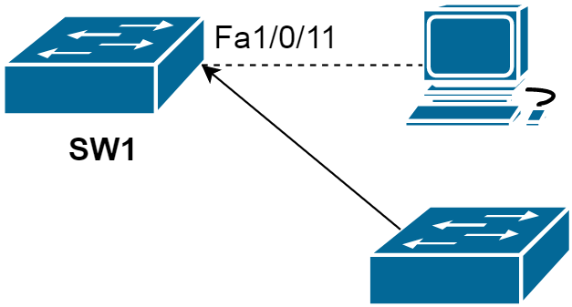

Protecting the Spanning Tree Protocol Topology
STP BPDUGuard
BPDU Guard is usually configured along with PortFast.

SW1(config-if)#spanning-tree bpduguard enable *Mar 1 02:38:14.528: %SPANTREE-2-BLOCK_BPDUGUARD: Received BPDU on port Fa1/0/11 with BPDU Guard enabled. Disabling port. *Mar 1 02:38:14.528: %PM-4-ERR_DISABLE: bpduguard error detected on Fa1/0/11, putting Fa1/0/11 in err-disable state
SW1#show interfaces status err-disabled Port Name Status Reason Err-disabled Vlans Fa1/0/11 err-disabled bpduguard
STP BPDUFilter
The spanning-tree BPDUfilter works similarly to BPDUGuard as it allows you to block malicious BPDUs. The difference is that BPDUguard will put the interface that it receives the BPDU on in err-disable mode while BPDUfilter just “filters” it. In this lesson we will take a good look at how BPDUfilter works.
BPDUfilter can be configured globally or on the interface level and there is a difference:
- Global: if you enable BPDUfilter globally then any interface with portfast enabled will not send or receive any BPDUs. When you receive a BPDU on a portfast enabled interface then it will lose its portfast status, disables BPDU filtering and acts as a normal interface.
- Interface: if you enable BPDUfilter on the interface it will ignore incoming BPDUs and it will not send any BPDUs. This is the equivalent of disabling spanning-tree.
You have to be careful when you enable BPDUfilter on interfaces. You can use it on interfaces in access mode that connect to computers but make sure you never configure it on interfaces connected to other switches; if you do you might end up with a loop.
Switch(config)#interface fa1/0/19
Switch(config-if)#spanning-tree portfast trunk
Switch(config-if)#spanning-tree bpdufilter enableOr globally:
Switch(config)#spanning-tree portfast bpdufilter defaultPersonally I would not use this and use BPDUguard instead. If you do not expect BPDUs on an interface then it is better to get a notification (through err-disable) than not seeing what is going on.
STP Root Guard
RootGuard will make sure you do not accept a certain switch as a root bridge. BPDUs are sent and processed normally but if a switch suddenly sends a BPDU with a superior bridge ID you will not accept it as the root bridge.
The rootguard feature is implemented on a per interface basis with the spanning-tree guard root command, and the feature essentially prevents the interface from ever becoming a root port by placing the interface into root-inconsistent state upon receiving a superior BPDU. When the superior BPDU goes away, the port automatically transitions back to forwarding.
Configuration and verification example

spanning-tree vlan 1 root primary is issued on the Access bridge. We enable spanning-tree guard root on the interfaces facing the Access bridge on both Distribution_1 and Distribution_2:
Distribution_1(config)#interface fastEthernet 1/0/23 Distribution_1(config-if)#spanning-tree guard root *Mar 1 00:07:05.168: %SPANTREE-2-ROOTGUARD_CONFIG_CHANGE: Root guard enabled on port FastEthernet1/0/23.
Distribution_2(config)#interface fastEthernet 1/0/21 Distribution_2(config-if)#spanning-tree guard root 00:08:09: %SPANTREE-2-ROOTGUARD_CONFIG_CHANGE: Root guard enabled on port FastEthernet1/0/21.
Distribution_1#show spanning-tree interface fastEthernet 1/0/23 detail
Port 25 (FastEthernet1/0/23) of VLAN0001 is broken (Root Inconsistent)
Port path cost 19, Port priority 128, Port Identifier 128.25.
Designated root has priority 32769, address 001d.707b.4200
Designated bridge has priority 32769, address 001d.707b.4200
Designated port id is 128.25, designated path cost 0
Timers: message age 2, forward delay 0, hold 0
Number of transitions to forwarding state: 1
Link type is point-to-point by default
Root guard is enabled on the port
BPDU: sent 2663, received 48
Before issuing spanning-tree vlan 1 root primary command on the Access switch, let us see the output of the show spanning-tree command
Access#show spanning-tree
VLAN0001
Spanning tree enabled protocol ieee
Root ID Priority 32769
Address 001d.707b.4200
Cost 19
Port 25 (FastEthernet1/0/23)
Hello Time 2 sec Max Age 20 sec Forward Delay 15 sec
Bridge ID Priority 32769 (priority 32768 sys-id-ext 1)
Address 0022.be5a.0680
Hello Time 2 sec Max Age 20 sec Forward Delay 15 sec
Aging Time 300
Interface Role Sts Cost Prio.Nbr Type
---------------- ---- --- --------- -------- --------------------------------
Fa1/0/21 Altn BLK 19 128.23 P2p
Fa1/0/23 Root FWD 19 128.25 P2p
Now, I issue spanning-tree vlan 1 root primary command on the Access switch and compare the output of the show spanning-tree command:
VLAN0001
Spanning tree enabled protocol ieee
Root ID Priority 24577
Address 0022.be5a.0680
This bridge is the root
Hello Time 2 sec Max Age 20 sec Forward Delay 15 sec
Bridge ID Priority 24577 (priority 24576 sys-id-ext 1)
Address 0022.be5a.0680
Hello Time 2 sec Max Age 20 sec Forward Delay 15 sec
Aging Time 300
Interface Role Sts Cost Prio.Nbr Type
---------------- ---- --- --------- -------- --------------------------------
Fa1/0/21 Desg FWD 19 128.23 P2p
Fa1/0/23 Desg FWD 19 128.25 P2p
Now let us see the verification commands on Distribution bridges while Access switch is advertising itself as a root bridge.
Distribution_1#show spanning-tree inconsistentports Name Interface Inconsistency -------------------- ------------------------ ------------------ VLAN0001 FastEthernet1/0/23 Root Inconsistent Number of inconsistent ports (segments) in the system : 1
Distribution_2#show spanning-tree inconsistentports Name Interface Inconsistency -------------------- ---------------------- ------------------ VLAN0001 FastEthernet1/0/21 Root Inconsistent Number of inconsistent ports (segments) in the system : 1Now I am going to suppress the superior BPDU by giving a higher priority to Access.
*Mar 1 01:27:42.601: %SPANTREE-2-ROOTGUARD_UNBLOCK: Root guard unblocking port FastEthernet1/0/23 on VLAN0001.
Loop Guard
If you ever used fiber cables you might have noticed that there is a different connector to transmit and receive traffic.
If one of the cables (transmit or receive) fails we will have a unidirectional link failure and this can cause spanning tree loops. There are two protocols that can take care of this problem:
- LoopGuard
- UDLD (Unidirectional Link Detection)
In STP, the blocked ports will remain in the Blocking state as long as a steady flow of BPDUs is received. If BPDUs are being sent over a link but the flow of BPDUs stops for some reason, the last-known BPDU is kept until the Max Age timer expires. Then that BPDU is flushed, and the switch thinks there is no longer a need to block the port. The switch then moves the port through the STP states until it begins to forward traffic and forms a bridging loop.
If a port enabled with loopguard stops hearing BPDUs from the designated port on the segment, instead of transitioning into forwarding, it goes into the loop-inconsistent state. When BPDUs are received on the port again, Loop Guard allows the port to move through the normal STP states and become active.
Configuration
To simulate BPDU transmit, I will use:
Switch(config)#interface fastEthernet 1/0/24
Switch(config-if)spanning-tree portfast trunk
Switch(config-if)#spanning-tree bpdufilter enableDistribution_2(config-if)#spanning-tree guard loop
Distribution_2#show spanning-tree interface fastEthernet 1/0/24 detail
Port 26 (FastEthernet1/0/24) of VLAN0001 is forwarding
Port path cost 19, Port priority 128, Port Identifier 128.26.
Designated root has priority 32769, address 001d.707b.4200
Designated bridge has priority 32769, address 001d.707b.4200
Designated port id is 128.26, designated path cost 0
Timers: message age 1, forward delay 0, hold 0
Number of transitions to forwarding state: 2
Link type is point-to-point by default
Loop guard is enabled on the port
BPDU: sent 48, received 2999
Unidirectional Link Detection (UDLD)
The other protocol we can use to deal with unidirectional link failures is called UDLD (UniDirectional Link Detection). This protocol is not part of the spanning tree toolkit but it does help us to prevent loops.
Simply said UDLD is a layer 2 protocol that works like a keepalive mechanism. You send hello messages, you receive them and life is good. As soon as you still send hello messages but do not receive them anymore you know something is wrong and we will block the interface.
- Cisco proprietary
- Unidirectional link usually occurs in fiber optic
To simulate unidirectional link failure is a tricky part here. LoopGuard was easier because it was based on BPDUs. UDLD runs its own layer 2 protocol by using the proprietary MAC address 0100.0ccc.cccc. We can create a filter to block the UDLD traffic:
Switch(config)#mac access-list extended UDLD-FILTER
Switch(config-ext-macl)#deny any host 0100.0ccc.cccc
Switch(config-ext-macl)#permit any any
Switch(config-ext-macl)#exit
Switch(config)#interface fa1/0/19
Switch(config-if)#mac access-group UDLD-FILTER inThen a loop occurs. By default, UDLD is disabled on all switch ports. To enable it globally, use the following global configuration command:
Switch(config)#udld ?
aggressive Enable UDLD protocol in aggressive mode on fiber ports except where locally configured
enable Enable UDLD protocol on fiber ports except where locally configured
message Set UDLD message parametersWhen you set UDLD to normal it will mark the port as undetermined but it will not shut the interface when something is wrong. This is only used to “inform” you but it will not stop loops.
Aggressive is a better solution. When it loses connectivity to a neighbor it will send a UDLD frame 8 times in a second. If the neighbor does not respond the interface will be put in err-disable mode.
You also can enable or disable UDLD on individual switch ports, if needed, using the following interface configuration command: Here, you can use the disable keyword to completely disable UDLD on a fiber-optic interface.
Switch(config-if)# udld { enable | aggressive | disable }In order for UDLD to work we have to configure on both ends because UDLD is trying to establish a neighbor relationship with the other end.
To verify:
Switch#show udld fastEthernet 1/0/19Switch#debug udld eventsLoopGuard and UDLD both solve the same problem of unidirectional link failures. They have some overlap but there are a number of differences. Here is an overview:
| LoopGuard | UDLD | |
|---|---|---|
| Configuration | Global / per port | Global (for fiber) / per port |
| Per VLAN? | Yes | No, per port |
| Autorecovery | Yes | Yes, requires err-disable timeout. |
| Protection against STP failures because of unidirectional link failures | Yes, need to enable it on all root and alternate ports | Yes, need to enable it on all interfaces |
| Protection against STP failures because no BPDUs are sent | Yes | No |
| Protection against miswiring | No | Yes |